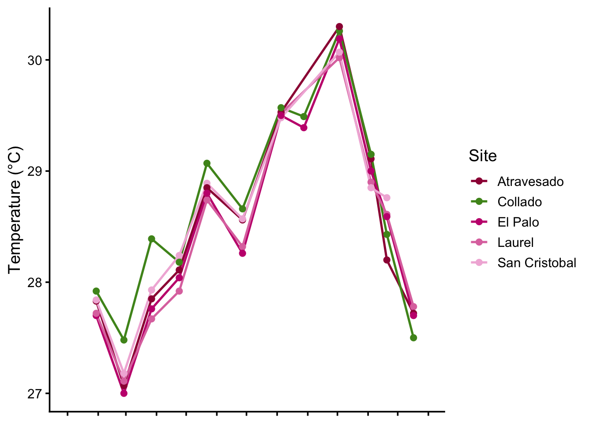
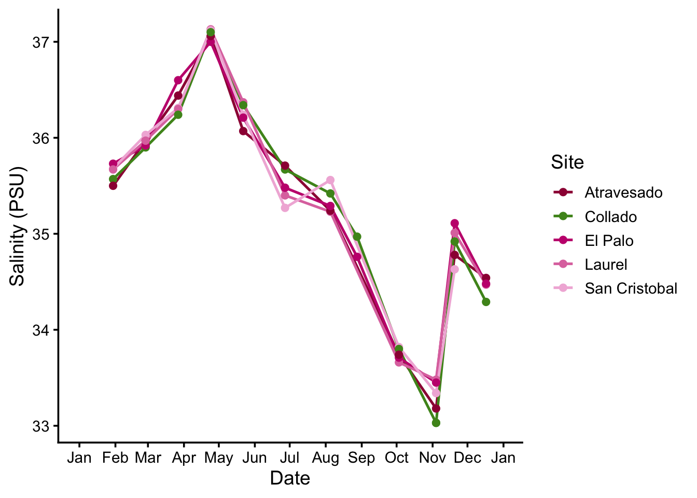
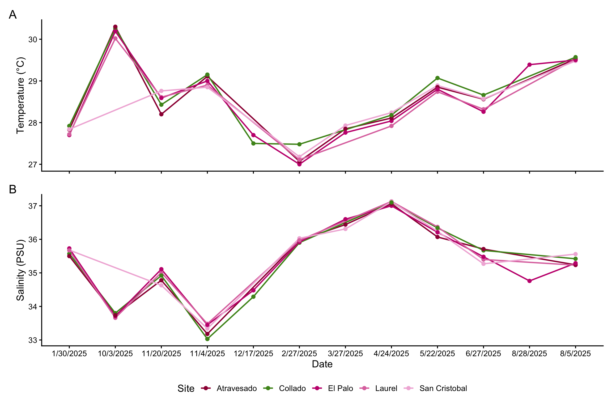

Attaching package: 'kableExtra'
The following object is masked from 'package:dplyr':
group_rows
Load Data
UlvaFieldData <-read_csv(here("Week_08","Data","Base de datos_cphr.csv"),locale =locale(encoding ="Latin1")) |># Ask Mica about this mutate(DateTime =mdy_hm(paste(Date, Time))) |>#Ask Mica about this filter(Site_ID =="Collado"| Site_ID =="Atravesado"| Site_ID =="San Cristobal"| Site_ID =="El Palo"| Site_ID =="Laurel") |># This dataset had other reef sites that I will be not be using, so I filted the ones I need filter(DateTime >=as.Date("2025-01-01") & DateTime <as.Date("2026-01-01"))
New names:
Rows: 88 Columns: 17
── Column specification
──────────────────────────────────────────────────────── Delimiter: "," chr
(7): Date, Time, Sample_ID, Site_ID, Field_pH, ...16, ...17 dbl (8): Latitude,
Longitude, Salinity, Temperature_Field, DO, Total_Alkalin... lgl (2): ...14,
...15
ℹ Use `spec()` to retrieve the full column specification for this data. ℹ
Specify the column types or set `show_col_types = FALSE` to quiet this message.
• `` -> `...14`
• `` -> `...15`
• `` -> `...16`
• `` -> `...17`
Warning: There was 1 warning in `mutate()`.
ℹ In argument: `DateTime = mdy_hm(paste(Date, Time))`.
Caused by warning:
! 15 failed to parse.
This dataset contains monthly seawater water quality measurements collected from coral reef sites in La Parguera, Puerto Rico, between January and December 2025.
FYI - This dataset was created by my colleague, Catherine Hernandez, and will be a part of my final project in this course. I just wanted to go ahead and start on it, and practice writing functions using this dataset to become more prepared for the analysis I’ll use for my final project.
Here I create a function that will let me plot different water quality parameters over time without having to rewrite the same code over and over.
Test - Plot Writing Functions
TempPlot <-WaterQualityPlot(x = Date, y = Temperature_Field) +labs(x ="Date", y ="Temperature (°C)") +theme(axis.text.x =element_blank(), # This removes the x axis legend title and the values axis.title.x =element_blank()) SalPlot <-WaterQualityPlot(x = Date, y = Salinity) +labs(x ="Date", y ="Salinity (PSU)")TempPlot

SalPlot

I tested the functions on temperature and salinity, and it worked! Woohoo!
Final Patchwork - Temp and Salinity
ChemTimeSeries <- TempPlot / SalPlot +plot_annotation(tag_levels ='A') +# Add the letters to each plot plot_layout(guides ='collect') &# Have one legend theme(legend.position ="bottom") # Move legend to bottomChemTimeSeriesggsave(here("Week_08", "Outputs", "Week8HomeworkPlot.png"),width =12,height =8)praise() # SO beautiful <3
[1] "You are sensational!"

Figure 1
Figure 1 I used patchwork() to combine temperature and salinity into a time series plot. I plan to use this code for my final project and add several other water quality parameters (DO, pH, Nutrients, nDIC, nTA).
Writing Functions - Create Summary Stats for each site and each parameter